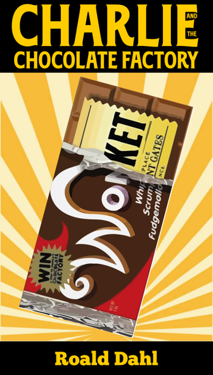
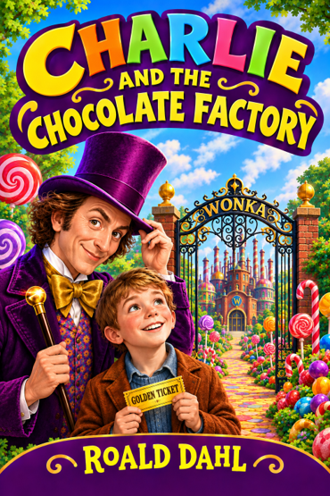

SVG LOGO
I designed my White Mountain Studio logo using Inkscape. I have previous basic experience using this platform. My logo represents where I live, the Smoky Mountains, and incorporates my last name, White. I selected an SVG image of a simple geometric mountain that looked like the letters m (mountain) and w (White) were built into the peaks, and imported it into my Inkscape workspace. My logo uses a strong center alignment to create symmetrical balance. Hierarchy and emphasis come from the prominent mountain graphic at the top of the logo and the bold, large, all-caps text of “WHITE MOUNTAIN” underneath. The word “Studio” was created in a lighter version of the same font, as it is a secondary focus. I feel the scale and proportion are appropriate, with the mountain graphic capping the text without overpowering it. As far as the color choice, the black and white elements make the logo crisp and allow it to stand out. The white space above the mountain graphic also helps define the “m” and “w” shapes in the peaks. In addition, I think the sharp, clean, geometric angles of the mountain graphic pair well with the straight lines of the Outfit font I chose. I didn't realize there was extra space around the logo until I tried to embed it on this webpage. It was causing a large gap between the logo and this text. I had to reimport it into Inkscape to resize the page to the selection using the following key combination: Shift+Ctrl+R. This cropped the extra space around the logo, and the issue was corrected when the new logo was embedded.
INKSCAPE CREATED BOOKCOVER

I created this "Charlie and the Chocolate Factory" book cover using Inkscape. I know how to navigate Inkscape's basic functions, so that was somewhat helpful for this assignment. At the start, I wanted to create a book cover similar to what I eventually created with AI prompting. I quickly realized the design in my head was way beyond my Inkscape skill set, so I had to go in a different direction. I decided to keep it simple by focusing on the candy bar and that infamous golden ticket. This became the central image of my book cover. There were several intentional design elements incorporated into the design of this book cover. The bright gold word “CHARLIE,” sized larger than the rest of the title, is the primary focal point of the cover set against the black background, emphasizing the importance of his character. This also establishes a hierarchy, where the eye starts here, then moves down to the rest of the title, and finally to the image of the Wonka Bar and the golden ticket. The scale of the candy bar image represents its importance to the story's plot. In addition, its angled position contributes to the cover's movement, and the sunburst stripes guide the eye inward toward the candy bar. The top and bottom texts are center-aligned, creating symmetrical balance, while the angled chocolate bar offsets them. The black blocks at the top and bottom of the cover effectively contrast with the gold text, making it stand out and easy to read. I learned a new function called “Set Clip,” which lets you trim excess material from an image, and I used it on both images I imported for my revised book cover design. It did take me a while to complete this book cover design after trying and failing with my first design idea. However, after rethinking it and developing a new book cover design, the process went a little more quickly.
AI CREATED BOOKCOVER

I created this "Charlie and the Chocolate Factory" book cover using ChatGPT. AI did an amazing job of creating what I originally envisioned for my book cover design. I only had to prompt it four times to get exactly what I was looking for, and the whole process took very little time. I wrote exactly what I wanted to be included in the image, the story elements, and the font description. I also asked it to incorporate design principles and appropriate color relationships. The only issues were that the golden ticket was too large in Charlie’s hands and the chocolate factory seemed to be floating above the entrance gates. I prompted AI to make the changes, and it did, but it also changed the look of the gates. This made me realize that you cannot fully control the AI's output every time. I had to ask it to change them back to the original gates. Then the factory was too far back in the image, so I asked the AI to move it closer to the gates without changing anything else. It finally produced an image that fit my expectations.